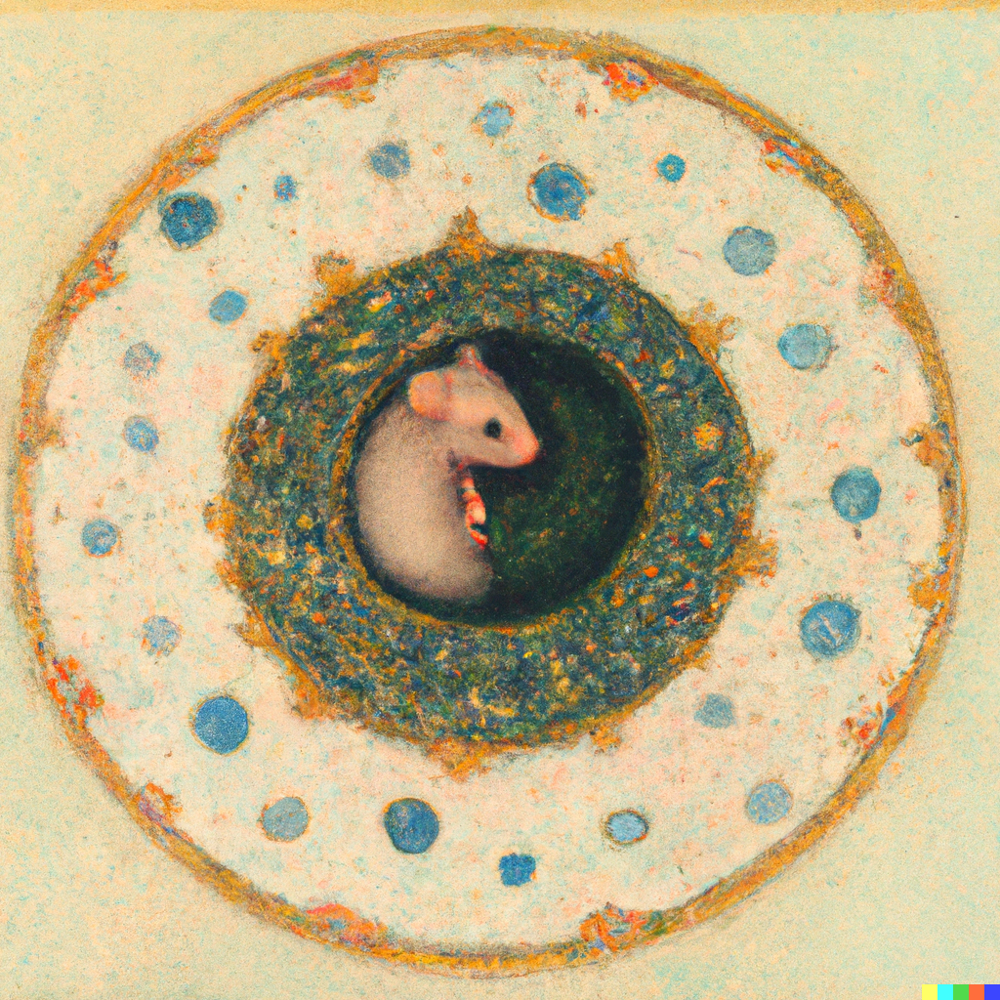

About me:
I am a Postdoctoral Fellow in the Moser Group at the Kavli Institute for Systems Neuroscience.
I am currently investigating the ontogeny of our sense of space, with a focus on the developmental timeline and the neural circuit implementations of toroidal and ring manifolds in mEC.
During my PhD I developed new implant systems for mice and studied the spatial and temporal code of CA1 place cells 1;2.
Passions on the side: poetry, history, cooking & foraging, and the mediterranean sea. ||

About my research
"Cognition is not the representation of a pre-given world by a pre-given mind but is rather the enaction of a world and a mind." — Varela et al. (1991)How do developing brains learn to coordinate sensation and movement to generate increasingly adaptive behaviors?
Neural circuits are not born computing. Animals learn about the world by moving through it: the body generates the very first experiences the brain needs to calibrate and anchor its internally generated activity. I study how this unfolds in thalamocortical circuits, starting from the brain's spatial navigation system, by following the geometry of neural population activity, the neural manifold, as it takes shape during early postnatal development. My research asks three questions:
Formation: how does structured population activity emerge from developing circuitry, before it is tied to behavior?
Calibration: how does it acquire its dynamics, using the body's own movements, including the twitches of sleep, as a teaching signal?
Anchoring: how does it become referenced to the external world as the senses come online?
To answer them, I combine (i) chronic high-density recordings of neural populations across behavior and sleep, (ii) analysis of population geometry and dynamics, and (iii) detailed 3D decomposition of behavior. My long-term goal is to carry these principles beyond this specific circuit, toward a general theory of how the manifolds underlying sensory, motor, and cognitive computation are built by developing brains